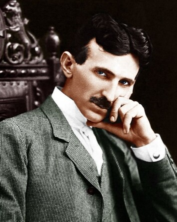

Nikolas Tesla

Imagem de Nikola Tesla
Nikola Tesla, foi um inventor, engenheiro eletrotécnico e engenheiro mecânico sérvio, mais conhecido por suas contribuições ao projeto do moderno sistema de fornecimento de eletricidade em corrente alternada (CA).
Algumas de suas principais invenções:
- Ferramentas para transmições de corrente alternada para longas distâncias
- Motor a indução
- Sistema de ignição para carros
- Bobina Tesla
Aqui está o o link da página do wikipedia id="tribute-link" para conhecermos mais sobre ele.